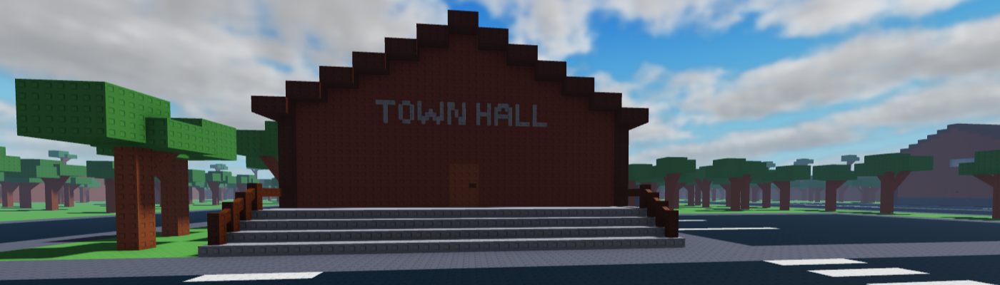
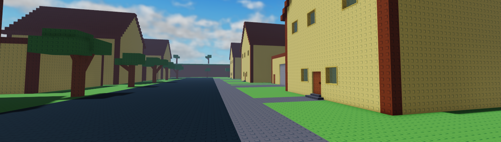
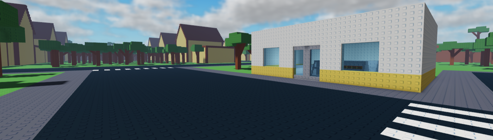
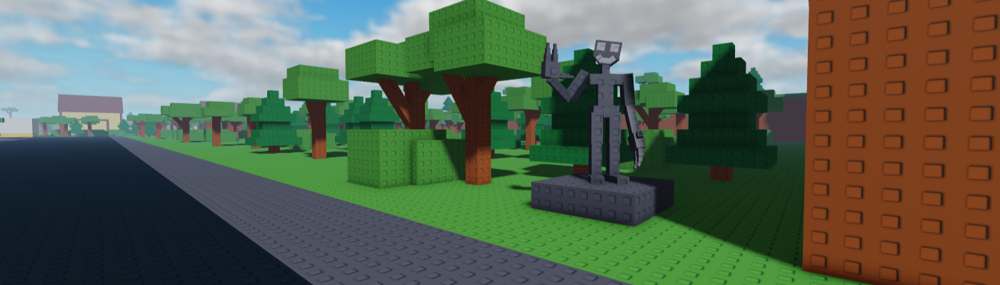

GloomyWood
Darkness City
Home
Legends
Topicality




We invite everyone to GloomyWood, a small town near GloomyMountain, which is steeped in legends. You can learn more about them in the "Legends" tab at the top. If you'd like to visit our mountains, remember that you can book a house with us for as long as you like, and if you get hungry, you can buy food at our temporary shop. If you'd like to buy a house temporarily, call +## ### ### ###, and have a nice day.